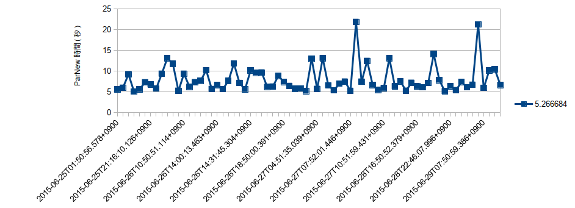

Table of Contents
1 環境
業務用の開発サーバ
| 項目 | スペック |
|---|---|
| CPU | Intel(R) Core(TM)2 Duo CPU E8400 3.00GHz |
| Core数 | 2 |
| Memory | 7G弱 |
| OS | Red Hat Enterprise Linux Server release 5.8 (Tikanga) |
| Middleware | java 1.7.0_75 |
| Weblogic 10.3.5.0 | |
| Oracle BPM Suite 11g (メモリを多めに割り当てた：6Gぐらい) | |
| ※他にものもの結構乗っている |
2 現象
- 特定のWeblogic管理対象サーバから応答が時々遅い(数秒程度)
- Full GCが起きると状況が悪化し、FullGCが終わらない
3 分析するためのデータを取る
- GCログからParNew処理が5秒以上のレコードを時間を抽出する。
2015-06-24T18:08:32.220+0900: 5.2666840 2015-06-25T01:50:56.578+0900: 5.6046080 2015-06-25T04:50:52.234+0900: 6.0052120 2015-06-25T12:05:52.068+0900: 9.2609380 2015-06-25T13:20:37.953+0900: 5.0946760 2015-06-25T13:20:58.403+0900: 5.6533820 2015-06-25T20:24:49.357+0900: 7.3204730 2015-06-25T21:16:10.126+0900: 6.7909460 2015-06-25T22:50:58.756+0900: 5.8355060 2015-06-26T01:50:50.893+0900: 9.3892250 2015-06-26T04:50:53.219+0900: 13.1395190 2015-06-26T07:50:54.425+0900: 11.7807430 2015-06-26T07:51:07.269+0900: 5.2793300 2015-06-26T10:50:51.114+0900: 9.3924480 2015-06-26T13:17:06.286+0900: 6.2010290 2015-06-26T13:17:54.396+0900: 7.3440480 2015-06-26T13:34:05.326+0900: 7.6791300 2015-06-26T13:51:04.590+0900: 10.2367630 2015-06-26T14:00:00.516+0900: 5.7046080 2015-06-26T14:00:13.463+0900: 6.6349530 2015-06-26T14:23:00.180+0900: 5.6609030 2015-06-26T14:26:28.796+0900: 7.6549640 2015-06-26T14:27:00.169+0900: 11.8500770 2015-06-26T14:29:39.363+0900: 7.1499710 2015-06-26T14:30:24.067+0900: 5.6382340 2015-06-26T14:31:45.304+0900: 10.1924060 2015-06-26T14:32:00.774+0900: 9.6242400 2015-06-26T16:51:18.422+0900: 9.6966490 2015-06-26T16:51:45.363+0900: 6.2090530 2015-06-26T18:30:49.993+0900: 6.2954670 2015-06-26T18:38:00.437+0900: 8.8749850 2015-06-26T18:50:00.391+0900: 7.4192490 2015-06-26T18:54:00.271+0900: 6.4426840 2015-06-26T18:54:08.234+0900: 5.7452440 2015-06-27T01:50:50.387+0900: 5.8063930 2015-06-27T01:51:05.004+0900: 5.2115420 2015-06-27T04:50:58.781+0900: 12.9891770 2015-06-27T04:51:35.039+0900: 5.7282510 2015-06-27T07:50:51.112+0900: 13.1250670 2015-06-27T07:51:06.604+0900: 6.5727200 2015-06-27T07:51:29.483+0900: 5.3706130 2015-06-27T07:51:36.469+0900: 7.0014700 2015-06-27T07:51:49.055+0900: 7.4964390 2015-06-27T07:52:01.446+0900: 5.2537540 2015-06-27T08:01:04.920+0900: 21.8820470 2015-06-27T09:53:02.648+0900: 7.4830120 2015-06-27T10:50:52.478+0900: 12.4821770 2015-06-27T10:51:07.595+0900: 6.6430700 2015-06-27T10:51:34.192+0900: 5.4682220 2015-06-27T10:51:59.431+0900: 5.8981600 2015-06-27T13:50:54.701+0900: 13.1269190 2015-06-27T13:52:23.353+0900: 6.3293780 2015-06-27T16:46:06.634+0900: 7.5433970 2015-06-28T04:51:06.881+0900: 5.2944910 2015-06-28T13:50:55.136+0900: 7.2090390 2015-06-28T16:50:52.379+0900: 6.3410470 2015-06-28T17:01:07.773+0900: 6.1038880 2015-06-28T19:50:50.750+0900: 7.1304960 2015-06-28T19:50:59.538+0900: 14.1206920 2015-06-28T19:51:39.786+0900: 7.8585130 2015-06-28T20:10:05.988+0900: 5.1535220 2015-06-28T22:46:07.996+0900: 6.3876340 2015-06-28T22:50:56.687+0900: 5.4313050 2015-06-29T01:51:06.697+0900: 7.4033850 2015-06-29T05:24:56.775+0900: 6.1023960 2015-06-29T06:01:13.724+0900: 6.7346550 2015-06-29T07:16:11.399+0900: 21.2494760 2015-06-29T07:50:59.386+0900: 5.9733680 2015-06-29T10:11:13.076+0900: 10.1998490 2015-06-29T10:51:20.998+0900: 10.4616600 2015-06-29T11:02:06.230+0900: 6.6641290
図形にPlotしてみたら、ParNewが高いGCの時間帯があんまり規則がないので、定期イベントに よるものではないと判断した。

- FullGC時システムリソースの変化状況
$ vmstat 5 60 1|procs -----------memory---------- ---swap-- -----io---- --system-- -----cpu------ 2| r b swpd free buff cache si so bi bo in cs us sy id wa st 3| 0 0 3379376 115268 9804 467464 12 9 107 34 1 1 8 2 89 1 0 4| 0 0 3379376 113584 9808 468660 0 0 237 41 512 719 4 1 93 1 0 5| 0 1 3377744 95484 9828 469060 749 0 825 15 567 793 5 1 78 16 0 6| 0 1 3369436 80108 9836 469092 3175 0 3175 44 471 759 1 1 50 49 0 7| 0 1 3360436 60896 9836 469072 3807 0 3807 3 451 776 0 1 49 49 0 8| 0 1 3352216 48620 9844 465784 3375 155 3375 158 450 744 0 1 50 49 0 9| 0 1 3347272 51844 9804 450912 2879 874 2879 878 568 739 1 2 49 49 0 10| 0 1 3339972 49380 9652 444336 2601 541 2601 558 551 697 0 1 47 52 0 11| 1 1 3336692 50752 9560 434856 2364 768 2364 768 605 692 1 1 49 49 0 12| 1 1 3332740 52108 9416 425016 2293 761 2293 791 604 682 1 1 49 49 0 13| 0 1 3325100 52224 9400 412236 3399 662 3399 675 564 730 0 1 50 49 0 14| 0 1 3320168 48248 9336 405168 2868 530 2868 533 513 717 0 1 49 49 0
5行目はFullGC実施のタイミングです。5行目以降si/so/si/boの数値が上がる。
4 原因／考察
swpd列の値を見れば原因は明白ですね、物理メモリが足らずJavaプロセスのメモリが大半スワー プアウトされた、FullGCを掛けるとオブジェクトの参照を検査するためにヒープ全体を舐める。 メモリから追い出されたヒープメモリをディスクから読み戻し、また読み戻した分の領域を確 報するため、相対的に使っていないメモリをディスクに追い出す処理が激しく繰り返した。
- Javaプロセスのヒープ／Permに物理メモリの容量以上を割り当てしては行けない
- Swapと共にFullGCが起きると、
kill -9で強制停止する